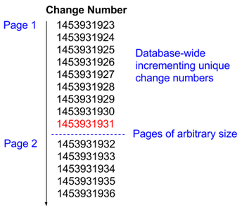

This specification tackles the generic use-case of unidirectional real-time data synchronisation between two systems, where the receiving system requires only summary data from the origin system.
Contributions to this document are not only welcomed but are actively solicited and should be made via GitHub Issues and pull requests. The source code is available on GitHub.
The W3C OpenActive Community Group was established with the objective of facilitating the sharing and use of physical activity data. Open publishing of this data has enormous potential to increase participation in physical activities.
OpenActive specifications are modular, each focussing on a specific use case regarding physical activity data.
Other aspects of the Community Group's work includes the collation and specification of test suites to assess conformance to referenced standards, and the specification of a framework within which such conformance testing might be assessed.
1.2 Use case and requirements
Booking systems contain session data (a specific event at a time in a location). Examples include bookable squash courts, Yoga classes, and running groups.
1.2.1 Realtime
This session data is frequently updated as sessions are booked and descriptions changed. Such data must be available as close to real-time as possible.
1.2.2 Simplicity of implementation
Many booking systems are maintained by an agency or supplier, and changes are funded by organisations with small budgets. Hence simplicity and speed of implementation are paramount.
1.2.3 Flexibility of interface
Due to the cost of implementing any feature within a booking system, and the number of systems involved, any specified interface must not contain inherent constraints to innovation. For example, it should not impose restrictions that limit retrieval of data. Innovators should be able to easily implement novel solutions to increase physical activity using the data however they see fit. This means minimising query complexity within the booking system in order to maximise flexibility, and providing a simple solution that enables raw data synchronisation.
1.3 Scope
This specification is tightly defined to cover data exchange and synchronisation itself; to cover the real-time exchange of generic entities between two systems.
1.3.1 Goals
Sharing of session data, including related metadata (clubs, courses, membership requirements, skill level, cost), and events (e.g. open days).
Paging and synchronisation to ensure robust incremental transport of data.
Allow a data consumer to "refresh its cache", by providing the facility to download all data.
(Stretch goal) Extendable to support real-time, high volume data transfer, to satisfy peak load requirements.
1.3.2 Non-goals
User Authentication.
Booking and payment.
Availability of courts and facilities.
Membership packages.
Standardisation of content (e.g. "Football" = "Soccer").
1.4 Objectives
Easy to understand
Simple to implement (does not require complex libraries)
Based on existing standards where possible
Minimalistic (focus on removing complexity)
Minimise traffic between services
Robust to errors and failed requests
Capable of scaling to handle high volumes
2. Conformance
As well as sections marked as non-normative, all authoring guidelines, diagrams, examples,
and notes in this specification are non-normative. Everything else in this specification is
normative.
The key words MAY, MUST, MUST NOT, OPTIONAL, RECOMMENDED, REQUIRED, and SHOULD are
to be interpreted as described in [RFC2119].
This specification describes the conformance criteria for OpenActive data synchronisation endpoints.
3. Overall approach
In order to create a simple specification that is robust and scalable, the transport mechanism is separated from the paged exchange specifics. By applying paging to all transport alternatives, the approach is inherently scalable.
A continuous list of records that MUST be sorted deterministically and chronologically (in the order they were updated). Either (i) ordered first by modified timestamp, and second by ID or (ii) ordered by an incrementing counter where records are assigned a new unique value on each update.
Every record MUST only be represented once in this list at a given moment, distinguished by its unique ID, with its position in the list depending on when it was last updated. Records can freely move position in the list as they are updated.
This deterministic ordering based on timestamp allows for pages of arbitrary size to be sent without concern for race conditions; if a record is updated during the transfer of a page it MUST appear on a subsequent page (i.e. simply reappear further down the list).
Pages are defined using a "next page URL", which MUST contain enough information to identify a position in the list (e.g. by a "timestamp" and "ID" combination). It MUST NOT reference a specific record, as that record can change position in the list.
If a "next page URL" is not used to access the list, the first page MUST be returned.
If the consumer reaches the end of the list they consider themselves up-to-date at that moment, and can infrequently revisit the end of the list in order to retrieve further updates.
If any record is added to the list or updated it MUST remain in the list in perpetuity while it is in an "updated" state, or remain in the list for at least 7 days from the point in time at which it transitioned to a "deleted" state. This ensures that deletions are synchronised to data consumers (System 2).
This paging allows for an ongoing data synchronisation that synchronises all data, which can be replayed arbitrarily by the data consumer (System 2).
4.3 Ordering strategies
Two recommended ordering strategies are described below, both adhere to the specified invariants described in the previous section. One of these two strategies MUST be used as a basis for any implementation, unless the invariants are well understood and the implementation can be thoroughly tested.
For both these ordering strategies the ordering of the results relative to the parameters MUST be implemented exactly as described here.
4.3.1 Modified Timestamp and ID
The items are ordered first by modified timestamp, and second by ID. The content of the [JSON] response depends on the supplied parameters, as specified below.
Parameter
Implementation
Notes
afterTimestamp
REQUIRED
The modified timestamp, after or at which results will be returned. If not specified, the request MUST return results from the beginning of time. The timestamp SHOULD be in integer format where possible (e.g. Unix epoch). For non-integer timestamps, this parameter MUST be URI encoded using e.g. [URI-Handling-Function-Properties].
afterId
REQUIRED
Where multiple items have the same modified value, this parameter specifies the ID after which results will be returned. If not specified, the request MUST return results from the beginning of time. For non-integer IDs, this parameter MUST be URI encoded using e.g. [URI-Handling-Function-Properties].
limit
OPTIONAL
The number of items returned within the page. A suggested default for most opportunity data sources is 500 items.
In this example, afterTimestamp=1453931925&afterId=12 would return Page 2 labelled in Fig. 2Illustration of the deterministic list, hence the last item of a returned page of results can be used to get parameters to retrieve the next page of results, and thus the last item can be used to generate the "next page URL".
Note that the timestamp does not need to reflect actual time, as long as it provides a chronological ordering. Any integer or string representation is sufficient, provided it is sufficiently comparable to support the invariants.
Fig. 2Illustration of the deterministic list
4.3.1.1 SQL Query Example for Timestamp/ID
Where a table exists containing modified and id columns.
--include WHERE clause only if @afterTimestamp and @afterId provided
WHERE (modified = @afterTimestamp
AND id > @afterId)
OR (modified > @afterTimestamp)
ORDER BY modified,
id
Note
Misreading this query is the single most common cause of incorrect implementation. Please read it carefully and ensure that brackets and comparators are used correctly. > not >= for example.
4.3.1.2 JavaScript Query Example for Timestamp/ID
Where a table or collection exists containing modified and id columns or properties.
Note the example above is a hypothetical JavaScript ORM, for illustration.
4.3.2 Incrementing Unique Change Number
The items are ordered by an incrementing counter, and are assigned a new unique value on each update. The content of the [JSON] response depends on the supplied parameters, as specified below.
Parameter
Implementation
Notes
afterChangeNumber
REQUIRED
An integer after which results will be returned. If not specified, the request MUST return results from the beginning of time.
limit
OPTIONAL
The number of items returned within the page. A suggested default for most opportunity data sources is 500 items.
The change number MUST provide a deterministic chronological ordering within the scope of the endpoint. A database-wide counter is sufficient (such as SQL Server's timestamp or rowversion). The data consumer (System 2) simply maintains the "next page URL", and hence the detail of the change number is transparent in their implementation.
The id (unique identifier which is distinct from the change number) MUST be included within the item, to allow items to be uniquely identified for the purposes of update and delete operations.
The modified property MUST be included within the item, and set to the change number, to allow items with identical ids from different pages to be compared chronologically.
In this example, afterChangeNumber=1453931931 would return Page 2 labelled in Fig. 3Illustration of the deterministic list via change number, hence the last item of a returned page of results can be used to get parameters to retrieve the next page of results, and thus the last item can be used to generate the "next page URL".

Fig. 3Illustration of the deterministic list via change number
4.3.2.1 SQL Query Example for Change Number
Where a table exists containing a change_number column.
--include WHERE clause only if @afterChangeNumber provided
WHERE change_number > @afterChangeNumber
ORDER BY change_number
4.3.2.2 JavaScript Query Example for Change Number
Where a table or collection exists containing a changeNumber column or property.
var query;
if (queryParams.afterChangeNumber) {
query = Session.query().filter(Session.changeNumber > queryParams.afterChangeNumber);
} else {
query = Session.query()
}
return query.sort([Session.changeNumber])
Note the example above is a hypothetical JavaScript ORM, for illustration.
4.4 Response grammar
It should be noted that although <data> is open to conformance with [JSON-LD], the properties in this specification do not use any part of the [JSON-LD] specification.
Endpoints MUST NOT include [JSON-LD] syntax except for within the data property.
A generic response specification is included here, in order to standardise the transport encapsulation for the records across entities and systems - including paging and polling logic.
Property
Status
Notes
next
REQUIRED
The next URL is a precomputed URL to be called by the data consumer (System 2) to get the next page of data. The next URL MUST be calculated from the last item used to generate the current page, and use the current page's own URL if no items exist. Not all items in the current page may be visible in the case of filtering so the last item used may not be contained within items. The next URL MUST be an absolute URL. Note "polling" and "paging" are differentiated only by the duration between requests. Although an example endpoint path is provided ("/api/rpde/sessions"), it is outside the scope of this specification.
items
REQUIRED
An array of <item>. This should simply by empty [] if no results are returned. The items property being empty is not sufficient to indicate the last page.
Reference to the license under which the data has been published. Any website that links to this endpoint SHOULD also include text such as "This opportunity data is owned by My Company Ltd and is licensed under the Creative Commons Attribution Licence (CC-BY v4.0) for anyone to access, use and share.".
version
OPTIONAL
The version number of the RPDE specification to which the feed conforms. This property is currently OPTIONAL, to retain backwards compatibility with earlier versions, but will become REQUIRED in the next major version of this specification. It is RECOMMENDED that implementations begin using this property. If a version property is not specified for a feed, then a client MAY assume that it conforms to version 1.0.
oppportunityModelVersion
OPTIONAL
Presence of this property indicates that the feed is using the [Modelling-Opportunity-Data] specification as the standard data model. Clients can expect that <data> properties included in this feed will have values that conform to that specification. The value of the oppportunityModelVersion property should be the version number of the [Modelling-Opportunity-Data] specification being used to publish data. Implementations that are using the standard model SHOULD always use this property. If the property is not specified then a client MAY use heuristics (e.g. detecting certain data structures) to attempt to determine which data model is being used.
feedObjects
OPTIONAL
For feeds that conform to the [Modelling-Opportunity-Data] specification this property indicates that types of object are included in the feed. E.g Events or Organisations. The property allows clients to decide not to harvest feeds based on what type of data it contains. The value of the property should be an array of URIs, one for each of the types of resource that might appear in the feed. While this property is OPTIONAL, a feed that includes the oppportunityModelVersion property MUST include this property to help inform clients about the contents of the feed.
The following example illustrates use of the additional optional properties:
The state property MUST be of value "updated" or value "deleted". Deleted items are included in the response with a "deleted" state, but no <data> associated.
kind
REQUIRED
The kind property allows for the representation of different entity types, though where possible referenced entities should be embedded into the primary entity. Each entity type (kind) can be synchronised separately, this allows a decoupling of the sync logic from the data structure, and allows the data structure to be reassembled on the data consumer side (at System 2).
id
REQUIRED
The id property is the unique identifier of the item. Two items MUST NOT share the same id. Although the IDs shown here are GUIDs, and other examples are numeric, this specification does not prescribe any specific format.
modified
REQUIRED
The modified property should contain either the modified timestamp or change number of the item, depending on the ordering strategy used. It MUST be appropriately comparable to itself as either a string or integer, representing a chronological ordering. It MUST always be updated when any data within <data> is updated, and such an update MUST set the value of the property to be greater than or equal to (>=) all existing modified values. It MAY be any format, but SHOULD be an integer where possible. Integer values MUST be represented as integers, not strings. The value of the modified property of the last item MUST be used in either the afterTimestamp or afterChangeNumber parameter of the "next" URL (though such an item may not be included in <items> if it is filtered out). The format of the modified property and the relevant URL parameter MUST be identical.
data
REQUIRED
Note this property MUST NOT be included if state is "deleted".
4.4.3 <data>
Issue 1
Issue 84: Revise recommendations around non-standard data models.
The <data> part of the response is open for applications to populate with whatever data structure is most appropriate for the entity type ("kind") being exchanged.
This specification includes generic constraints for representing values and entities, to ensure consistency across implementations.
4.4.3.1 Date and time formats
Dates and times within <data>MUST respect the specific profile of [ISO8601] specified here, derived from [NOTE-datetime], in order to ensure that event start times and other vital properties within <data> are interpreted correctly by data consumers.
Note that the modified property outside of <data>SHOULD be represented as an integer where possible.
Times within <data>MUST:
be expressed either in UTC or in local time with a time zone offset (i.e. both approaches to handling time zone offsets defined in [NOTE-datetime] are permissible)
include a time zone designator
include the trailing UTC time zone designator ("Z") where times are expressed in UTC
Times within <data>SHOULD:
be expressed in UTC instead of local time (e.g. "2014-08-12T18:50:00Z" instead of "2016-07-13T20:00:00-05:00").
Dates and times within <data>MUST:
be represented using the [NOTE-datetime] profile of [ISO8601], with the addition of two time-only formats, and hence conform to one of the following formats:
Year:
YYYY (eg 1997)
Year and month:
YYYY-MM (eg 1997-07)
Complete date:
YYYY-MM-DD (eg 1997-07-16)
Complete date plus hours and minutes:
YYYY-MM-DDThh:mmTZD (e.g 1997-07-16T19:20Z or 1997-07-16T19:20+01:00)
Complete date plus hours, minutes and seconds:
YYYY-MM-DDThh:mm:ssTZD (e.g. 1997-07-16T19:20:30Z or 1997-07-16T19:20:30+01:00)
Hours and minutes:
hh:mmTZD (e.g 19:20Z or 19:20+01:00)
Hours, minutes and seconds:
hh:mm:ssTZD (e.g. 19:20:30Z or 19:20:30+01:00)
where:
YYYY = four-digit year
MM = two-digit month (01=January, etc.)
DD = two-digit day of month (01 through 31)
hh = two digits of hour (00 through 23) (am/pm NOT allowed)
mm = two digits of minute (00 through 59)
ss = two digits of second (00 through 59)
TZD = time zone designator (Z or +hh:mm or -hh:mm)
4.4.3.2 Other value formats
All URLs within <data>MUST be absolute.
HTML or Markdown encoded values MUST be included as two separate properties within <data>: a plain text property stripped of formatting syntax, as well as an HTML or Markdown property containing the original value.
Integer properties MUST be represented as integers, not strings.
4.4.3.3 Entity properties
Embedded entities within <data>MUST include their IDs, to allow for efficient processing by the consuming application (System 2).
Where an embedded entity has a URL that represents it on a public facing website (e.g. a page for the location), this URL MUST be included, to allow it to be referenced by data consumers.
4.4.3.4 Use of standard data model
Applications SHOULD use a standard data model to increase interoperability of the exchanged data. For example an application may choose to use entities and properties defined in [SCHEMA-ORG] to help structure data in a useful way for data consumers.
Applications that are exchanging data about entities described in [Modelling-Opportunity-Data] MUST ensure that their data conforms to that specification.
This includes data on Events, Organisations, Places, etc. [Publishing-Opportunity-Data] provides additional examples and guidance on using that data model
in ways that are compatible with the other standards published by OpenActive.
Feeds that are using the [Modelling-Opportunity-Data] model MUST include the oppportunityModelVersion and feedObjects properties in the <response> to clients.
Applications that publish data using bespoke data models SHOULD provide users with relevant documentation.
Note
The remainder of this specification uses simple examples when showing <data> in responses. However these examples are for illustrative purposes only. For a comprehensive selection of examples of opportunity data, read the [Publishing-Opportunity-Data] primer.
4.5 Related entities
This specification can be implemented for each relevant entity type within System 1 (e.g. club, courses, sessions).
Data from related entities can either be:
Embedded inside the parent entity. This requires the parent "updated" field to reflect the maximum value of all children - achievable via database triggers or similar.
Provided by separate endpoints with distinct "kinds" implementing this specification, the combination of which can be reassembled by System 2.
Provided as distinct "kinds" within the same endpoint implementing this specification, the combination of which can be reassembled by System 2.
Entities that have similar update frequencies (e.g. Event and Location) MUST be embedded in the same endpoint.
Entities with substantially different update frequencies (e.g. Event Description and Availability) MAY be provided as separate endpoints with distinct kinds, or as distinct kinds within the same endpoint. Each entity type MUST have a distinct kind to allow it to be considered separately. This allows a decoupling of the sync logic from the data structure, and allows the data structure to be reassembled on the data consumer side (in System 2).
When distinct kinds are provided for different entity types, an ID within the <data> of one must reference an ID within the <data> of another.
The modified property of an item MUST be updated when any embedded child entities are updated.
4.6 Deleted items
If any item is added to the list or updated it MUST remain in the list in perpetuity while it is in an "updated" state, or remain in the list for at least 7 days from the point in time at which it transitioned to a "deleted" state. This ensures that deletions are synchronised to data consumers.
Deleted items are included in the response with a "deleted" state, but no <data> associated.
In order to implement this correctly, it is advisable for records in System 1 to have a "deleted" flag that is set instead of deleting the record permanently.
4.7 Example
A full example REST response from polling is included below. Note that the shape of the data within the data property is largely outside of the scope of this specification, however the dates/times, embedded entity identifiers, URLs, and integer values in the example below all demonstrate conformance to the relevant generic constraints that are within the scope of this specification.
Request:
GET /api/rpde/sessions?afterTimestamp=1453931101&afterId=%7Bc15814e5-8931-470c-8a16-ef45afedaece%7D
Polling mechanics and expected consumer behaviour are defined in this section.
5.1.1 Polling endpoint specification
This section is non-normative.
Although the parameters for the endpoint are defined within the scope of this specification, the name and path of the endpoint are outside of the scope.
An illustrative example of an endpoint with parameters conforming to this specification is below:
Without parameters (first page): /sessions
With parameters (subsequent pages): /sessions?afterTimestamp=1453931101&afterId=%7Bc15814e5-8931-470c-8a16-ef45afedaece%7D
5.1.2 Expected consumer behaviour
5.1.2.1 Initial download
When consuming the data, pages are first downloaded sequentially to catchup with the current state of System 1. This is achieved by following the next property of each page until the last page is reached.
5.1.2.2 Polling for near real-time updates
The consumer MAY poll the endpoint infrequently at the last page URL to check for updates. When items are found, it SHOULD resume the behaviour of the initial download: following the next property of each page.
5.1.3 Content type
The polling endpoint MUST declare the correct content type
Content-Type: application/json.
5.1.4 HTTP status codes
The polling endpoint MUST return the following status codes, and consuming applications MUST respect these:
HTTP Status Code
Interpretation
Expected consumer (System 2) behaviour
200
Normal response
Continue download / infrequent polling
503
Temporary overloading or maintenance of the server
Clients SHOULD retry after a random interval between 60 and 120 minutes, to ease load from multiple consumers
404 or 410
Endpoint not found at this location
Clients SHOULD consider this endpoint to be in an error state and discontinue harvesting
5.1.5 Last page definition
The last page MUST have the following properties:
The items property is an empty array.
The next property matches the URL of the current page.
This allows for in-stream filtering and other usecases where the number of items in each page may vary.
5.1.6 In-stream filtering
The items property being empty is not sufficient to indicate the last page, as in-stream filtering is permitted on items within the page such that a page may appear to contain zero items, but specify a valid next URL distinct from the URL of the page.
Fig. 4Illustration of in-stream filtering
Although a full page may be presented from System 1 to the filter, the filter may exclude any and all items within the list, resulting in a zero-item array at System 2.
Note that any items allowed to pass through the filter once MUST, at the point that they no longer meet the filter conditions and would otherwise be filtered out, be allowed to pass through the filter with a "deleted" state for at least 7 days. This is in keeping with the invariant described in the core concept, ensuring that System 2 correctly deletes items that have been modified such that they are subsequently filtered out.
5.2 Strict chronological ordering of items
For high-throughput, when updating data in the data consumer's state (System 2), the modified property of each item is available to ensure items are only updated with the most recent data, and that old data is ignored. Although this technique is intended to be used specifically for parallel processing scenarios, all methods of transport MUST respect a strict chronological ordering of items by modified timestamp and ID, or change number, for each kind in order to ensure data consistency. Ordering across kinds is not important.
5.3 Other transport mechanisms
Note that although this specification has been built to cater for other types of transport, it focuses on polling as the primary transport mechanism. The exploration of other transport mechanisms is encouraged for usecases that require higher throughput. To support additional testing and experimentation of new transport mechanisms, a "beta" wiki has been defined to allow the community to explore such mechanisms collaboratively. For more information on the process supporting this, see [OpenActive-RPDE-Beta-Wiki].
6. Implementation
This section is non-normative.
6.1 Common implementation issues
This specification is simple to implement, however such implementation requires precision to ensure that it is robust. The most common issues encountered during implementation are enumerated here:
The last page must have zero items, and a correct next URL that matches the current page's URL.
The query must be correctly implemented with the parentheses in the correct positions.
The core concept must be understood, specifically the nature of the list of items where each item appears only once, and each item exists in perpetuity unless deleted as specified in deleted items.
The modified value (used for either the afterTimestamp or afterChangeNumber parameter) must always be updated when any data within the data property is updated. This can be achieved through e.g. adding triggers for related changes to update the modified value on the primary table.
The modified value should match the format used in the afterTimestamp or afterChangeNumber parameters.
6.2 Potential race condition with next URL
The logic used to generate the "next" URL must query the database only once to retrieve the list of items (though subsequent queries can be made for each item if required). Hence the next URL must be derived from the last item of the original query, or the current page URL, instead of via a second query specifically for the next URL. If a second query is made, the state of the database may have changed in between the two queries, which can lead to inconsistent behaviour.
6.3 Patterns of implementation
Four common patterns of implementation are presented:
6.3.1 Single JSON entity cache table
A cache table is created which is updated on each related entity/table change, either via an application or database trigger. The table contains the rendered [JSON] <item>, along with the Modified Timestamp or Change Number, the ID, and a deleted flag.
Updates to the table overwrite old items with a newer modified timestamp.
The [JSON] response is generated from the cached [JSON] fragments within the table.
6.3.2 Table join with new timestamp field
The primary table is amended to include a new timestamp field (Modified Timestamp or Change Number), and application or database triggers are added to update this timestamp each time an embedded entity is updated.
The [JSON] response is generated on-demand from a query which joins together the various embedded entities (related tables) with the primary table, and ordering by the new timestamp field and existing ID field of the primary table.
A deleted flag will need to be added to the primary table if it does not already exist.
6.3.3 Table join with existing timestamp fields
The [JSON] response is generated on-demand from a query which joins together the various embedded entities (related tables) from the primary table, ordering by a max() of the timestamp fields in each table and the existing ID field of the primary table.
This is the most inefficient of the four patterns for most use cases, but the easiest to implement without database schema changes (assuming a deleted flag already exists on the primary table, otherwise it must be created).
6.3.4 Hybrid approach: denormalised paging table
A denormalised paging table is created that contains the fields required for the related entities along with a Modified Timestamp or Change Number, ID and deleted flag.
This table is then updated during each entity (related table) update via application or database triggers, and the [JSON] is generated on-demand from a simple query of the denormalised paging table.
The advantage of this approach is that the field mapping to any specification used for <data> can be separated from the trigger logic for the paging table, while reducing the load on the database for each query.
6.4 Additional notes
6.4.1 Calculated fields (e.g. available spaces or available tickets for a session)
Some entities will not need to be synchronised, but fields calculated from them will need to be known to the data consumer (System 2). For example, the "tickets" table may not need to be synchronised, but the "available tickets" calculated field on the "sessions" table will be required.
The suggested approach is to calculate the field "available tickets" and store it in the "sessions" table on each ticket sale. This has three advantages:
It keeps the application logic for such a calculation together with the original action.
It creates a cached value that can be used in other parts of the application to increase performance.
It prevents the creation of complex calculations which are used only on-demand for the purposes of data synchronisation.
An alternative could be to calculate it on each synchronisation, however this will slow down the sync. Assuming that reads will occur on this calculated data more frequently than writes, caching the calculated field is recommended.
6.4.2 Database triggers (Microsoft SQL Server example)
For implementations using a
timestamp/rowversion field on the parent table as the "change number", using the trigger below for each child table will update the rowversion field in the relevant rows on the parent table when the child table is updated.
The SET SomeColumn = SomeColumn part of this trigger could easily be replaced with setting materialised calculated fields (e.g. "total number of tickets sold") which contain the summary data required by System 2.
The example below has been adapted from here, see here for an explanation of the mechanics.
CREATETRIGGER tgUpdateParentRowVersion ON ChildTable FORINSERT, DELETE, UPDATEASBEGIN-- The updates below force the update of the parent table rowversion-- Materialised field calculation goes hereUPDATE ParentTable
SET SomeColumn = SomeColumn
FROM ParentTable a
JOIN inserted i on a.pkParentTable = i.fkParentTable
UPDATE ParentTable
SET SomeColumn = SomeColumn
FROM ParentTable a
JOIN deleted d on a.pkParentTable = d.fkParentTable
END
A. Acknowledgements
This section is non-normative.
The editors thank all members of the OpenActive Community Group for contributions of various kinds.